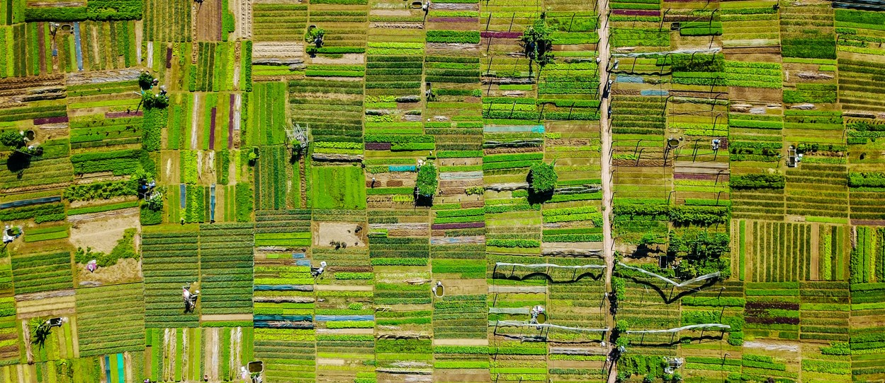

Agricultural Monitoring
Map agricultural productivity, analyze trends, and identify opportunities for growth using remote sensing and geospatial analysis.
Cropland Mapping
I generate detailed cropland and crop type maps that cover the full spectrum—from smallholder farms to industrial-scale operations. Leveraging advanced machine learning techniques and high-resolution satellite imagery, I train algorithms to accurately delineate cropland boundaries and classify crop types. This process not only supports precise land-use assessments but also enables dynamic, ongoing monitoring of agricultural landscapes.
Food Security Assessments
By combining remote sensing data with comprehensive geospatial analysis, I conduct food security assessments that evaluate agricultural productivity and help inform food security policies. My research, including a published paper in Nature Food, demonstrates how changes in land use can impact food availability and distribution, providing critical insights for policymakers and stakeholders.
Environmental Indicators
Monitoring the environmental drivers of food productivity is essential for proactive management. I continuously track indicators such as precipitation, surface water availability, vegetation health, and drought conditions at high frequency. For example, my crop monitoring application for Syria leverages these environmental metrics to assess stress factors and predict agricultural performance, ensuring that stakeholders can make timely and informed decisions.
Why Choose My Agricultural Monitoring Service?
By integrating advanced remote sensing, machine learning, and in-depth geospatial analysis, I offer a holistic solution that not only maps current cropland and productivity but also provides essential insights into environmental factors affecting food security. This comprehensive approach helps optimize resource allocation, support sustainable farming practices, and inform effective food security policies.